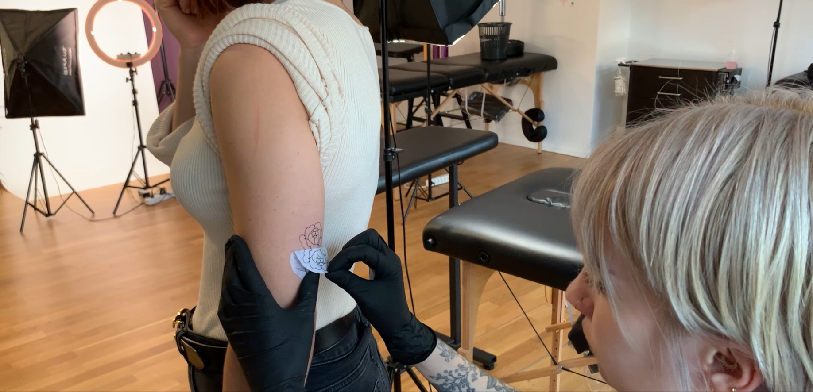

Mon expertise
Communication et création de contenus

Stratégie
Rédaction
RP
Veille
Digitale


Montage
Vidéo
Photo
Newsletter
Design
Mon portfolio
Projets académiques et professionnels

NIFFF X UNINE
Un projet réalisé dans le cadre d'un cours à l'UniNE en collaboration avec le NIFFF.
Projets 42 Lausanne
Trois projets que j'ai réalisé dans le cadre de mon stage à 42 Lausanne.

Portrait vidéo : Ancolie Tattoo
Une vidéo pour un cours à l'UniNE, présentant le métier de tattoo artist.
Campagne infirmier-ère-s précaires
Un projet de groupe fictif.
Envie d'en savoir plus ?
Contactez-moi sans attendre.